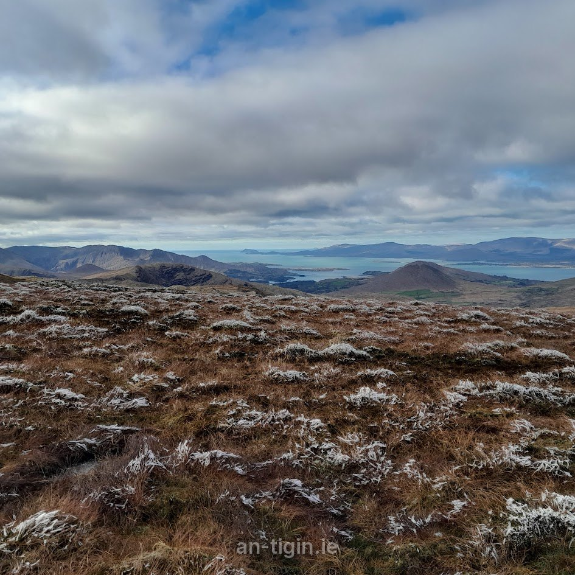

Walks
Walks nearby.
Our favourite routes.
Glengarriff and the Beara Peninsula are walking country. Here are some of our favourite routes.
Walk start points (click a pin for details) An Tigín
In & around Glengarriff
- Glengarriff Woods Nature Reserve trails ↗
River Walk, Big Meadow, Esknamucky & Lady Bantry's LookoutNPWS - Beara Way ↗
Long-distance way, passing through GlengarriffSport Ireland - Barley Lake ↗
Mountain lake above Glengarriff · from the car park above the lakeVisit Glengarriff - Blue Pool Park ↗
Shoreside trails & Seal Point in the villageDiscover Ireland - Garinish Island (Ilnacullin) ↗
Island garden paths · short ferry from GlengarriffOPW Heritage Ireland
Beara Peninsula
- Ardgroom: Pulleen Loop ↗
3.3 km · easy · sea cavesSport Ireland - Garinish Loop (Beara) ↗
4.9 km · moderateSport Ireland - Allihies: North Engine Loop ↗
7.2 km · moderate · copper minesSport Ireland - Dursey Island Loop ↗
11 km · moderate · via cable carSport Ireland - Druid's Loop, Bonane ↗
5 km · moderateSport Ireland - Gleninchaquin Park ↗
Waterfall & valley walks near KenmareGleninchaquin Park - Beara looped walks guide ↗
Directions for loops right around the peninsulaExplore West Cork - Derreen Garden ↗
Woodland garden walks at LauraghDerreen Garden - Dunboy Woods: Bullig Bay Loop ↗
4.2 km · easy · coastal loop by Dunboy CastleSport Ireland - Bere Island: Rerrin Loop ↗
6 km · easy · ferry from CastletownbereSport Ireland
Further afield
- Gougane Barra Forest Park ↗
Six forest & mountain trailsCoillte - Whiddy Island Loop ↗
7.2 km · ferry from BantrySheep's Head Way - Sheep's Head: Lighthouse Loop ↗
Coastal loop to the lighthouseSport Ireland - Torc Mountain (Kerry) ↗
Killarney National ParkDestination Killarney - Mizen Head ↗
Cliff paths, 99 steps & the footbridge to the signal stationMizen Head - Three Castle Head ↗
Cliff walk to Dunlough castle · private farmland, closed Jan–MarThree Castle Head - Baltimore Beacon Walk ↗
3.2 km · easy · from Baltimore pierSport Ireland - Cape Clear Island: Glen Loop ↗
7 km · ferry from BaltimoreSport Ireland - Lough Hyne & Knockomagh Wood ↗
Nature trail above the marine lake near SkibbereenSkibbereen Heritage Centre
These links go to external websites (Sport Ireland, NPWS, Coillte and others). We are not responsible for their content, so please check current trail conditions before you set out.